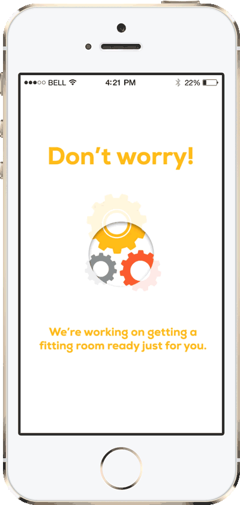

Animation Prototypes
A few animation prototypes done for Sears and the Shop Your Way Brands. While working at Sears, I led the mobile and interaction design teams in terms of the creation of transitional and non-static prototypes.

A few animation prototypes done for Sears and the Shop Your Way Brands. While working at Sears, I led the mobile and interaction design teams in terms of the creation of transitional and non-static prototypes.